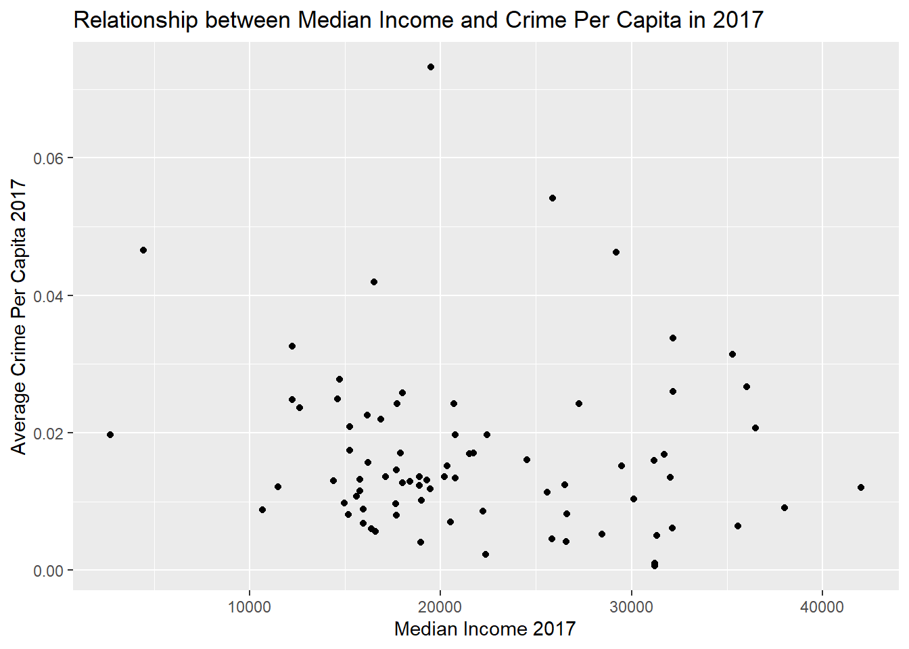

Neighborhood Disadvantage and Crime Variation Over Time
Olivia Delos
Introduction
Crime rates have decreased for all types of crime since the 1990s, although most considerably for violent crimes (Papachristos 2013). However, crime rates vary depending on the social composition of a neighborhood. Disadvantaged neighborhoods are disproportionately low-income with weak social ties and high residential instability, attributes often correlated with crime (Zuberi 2012). The concentration of poverty, violence, and high policing in disadvantaged neighborhoods hinders residents’ ability to form social cohesion and community organization, increasing residents’ risk of victimization (Van Wilsem, Wittebrood, De Graaf 2006). Violent crime, in particular, is more prevalent in urban, disadvantaged neighborhoods (Friedson and Sharkey 2015). However, few studies have examined whether the relationship between neighborhood disadvantage and crime varies by crime type. It is also well known that neighborhoods with a high immigrant population have lower crime rates (Adelman 2019). Buffalo’s Waterfront Area has a high immigrant population and has undergone recent developments aimed at resurgence (Adelman 2019). Elmwood Village has also seen continuous development. In order to determine whether recent developments infuence crime rates, I look at crime trends for these two areas as well as the entire city of Buffalo. By examining census data and crime data I answer four questions: 1) Has crime decreased in Buffalo, NY since 2010? 2) If so, does the decrease differ by crime type? 3) Has this decrease occurred more substantially in areas with a high immigrant population or areas that have undergone recent development (Elmwood Village and Waterfront Area)? 4) Does the relationship between median income and crime vary by crime type? To answer my questions, I compare crime rates by type of crime incident between 2010 to crime rates in 2017. I measure neighborhood disadvantage using census tract data in Buffalo, New York on median income from the 2010 and 2017 ACS. Crime data comes from OpenData Buffalo and can be broken into five categories: assault, breaking and entering, homicide, sexual offenses, and theft. I hypothesize that there will be a decrease in crime rates from 2010 to 2017 for all tracts, but more noticeably for violent crimes, as opposed to property crimes and that this decrease will be more substantial when examining developed neighborhoods. I also predict that the relationship between median income and crime will be greater for violent crimes.
Materials and methods
- Load required packages
- Download crime data from OpenDataBuffalo and 2010 and 2017 ACS estimates for income data in Erie County
- Clean and join data
- Run regression on types of crime and income level
- Create figures
1. Load required packages.
rm(list=ls())
library(tidycensus)
library(tidyverse)
library(readr)
library(dplyr)
library(ggplot2)
library(lubridate)
library(seg)
library(sf)
library(tigris)
library(gridExtra)
library(spgwr)2. Download the data
#Load crime data
crimesf=read_sf("https://data.buffalony.gov/api/geospatial/d6g9-xbgu?method=export&format=GeoJSON")
#Load 2017 census data
v17 <- load_variables(year = 2017, dataset = "acs5", cache = TRUE)
med_income2017 <- get_acs(geography = "tract",
variables = c(medianinc = "B06011_001"),
state = "NY",
county = "Erie",
year = 2017,
geometry = TRUE)
totalpop2017 <- get_acs(geography = "tract",
variables = c(totalpop = "B01003_001"),
state = "NY",
county = "Erie",
year = 2017,
geometry = TRUE)
# Load 2010 census data
v10 <- load_variables(year = 2010, dataset = "acs5", cache = TRUE)
med_income2010 <- get_acs(geography = "tract",
variables = "B19013_001",
state = "NY",
county = "Erie",
year = 2010,
geometry = TRUE)
totalpop2010 <- get_acs(geography = "tract",
variables = c(totalpop = "B01003_001"),
state = "NY",
county = "Erie",
year = 2010,
geometry = TRUE)Crop census data to Buffalo city limits
#Crop census data to city limits
income_crop2017 <- med_income2017[c(1:70, 228, 229, 221:227),]
income_crop2010 <- med_income2010[c(1:70, 228, 229, 221:227),]
totalpop17 <- totalpop2017[c(1:70, 228, 229, 221:227),]
totalpop10 <- totalpop2010[c(1:70, 228, 229, 221:227),]
#Transform crime geometry to match census tract
crimetrans <- st_transform(crimesf, st_crs(income_crop2017))
inc_tracts <- st_join(crimetrans, select(med_income2017,NAME), st_intersects)3. Clean crime data
#extract year from date
crime_date <- ymd_hms(inc_tracts$incident_datetime) %>%
year()
crime_year <- cbind(crime_date, inc_tracts, stringsAsFactors = FALSE)
#Recategorize crime types
crime_year$parent_incident_type <- as.factor(crime_year$parent_incident_type) %>%
fct_collapse(crime_year$parent_incident_type,
Theft = c("Theft of Vehicle", "Theft", "Robbery"),
Sexual_Offenses = c("Sexual Assault", "Other Sexual Offense"),
Breaking_entering = "Breaking & Entering",
Assault = "Assault",
Homicide = "Homicide")
#clean/filter crime data, drop geometry
crime2017 <- crime_year %>%
filter(crime_date == 2017) %>%
group_by(NAME, parent_incident_type) %>%
summarize(total = n()) %>%
st_set_geometry(NULL)
c2017_spread <- spread(crime2017, parent_incident_type, total)
c2017_spread[is.na(c2017_spread)] <- 0
#Do the same for 2010
crime2010 <- crime_year %>%
filter(crime_date == 2010) %>%
group_by(NAME, parent_incident_type) %>%
summarize(total = n()) %>%
st_set_geometry(NULL)
c2010_spread <- spread(crime2010, parent_incident_type, total)
c2010_spread[is.na(c2010_spread)] <- 0Clean income data and join datasets
#Remove and rename columns
income_clean17 <- income_crop2017 %>%
select(-moe, -variable, -GEOID)
income_clean10 <- income_crop2010 %>%
select(-moe, -variable, -GEOID)
pop2017_clean <- totalpop17 %>%
select(-moe, -variable, -GEOID)
pop2010_clean <- totalpop10 %>%
select(-moe, -variable, -GEOID)
colnames(income_clean10)[2] <- "MedianInc"
colnames(income_clean17)[2] <- "MedianInc"
colnames(pop2017_clean)[2] <- "Population"
colnames(pop2010_clean)[2] <- "Population"
#Join income and crime spread
crime_income2017 <- left_join(income_clean17, c2017_spread, by = c("NAME" = "NAME"))
crime_income2010 <- left_join(income_clean10, c2010_spread, by = c("NAME" = "NAME"))
#Join income and population
inc_pop2017 <- cbind(income_clean17, pop2017_clean) %>%
select(-NAME.1, -geometry.1)
inc_pop2010 <- cbind(income_clean10, pop2010_clean) %>%
select(-NAME.1, -geometry.1)Calculate avg crime rate per person
#Find mean total crime per tract
crimeAvg2017 <- crime_income2017 %>%
group_by(NAME, MedianInc) %>%
summarize(meancrime = mean(c(Assault, Breaking_entering, Sexual_Offenses, Theft)))
crimeAvg2010 <- crime_income2010 %>%
group_by(NAME, MedianInc) %>%
summarize(meancrime = mean(c(Assault, Breaking_entering, Sexual_Offenses, Theft)))
#Calculate crime rate per population
cpp17 <- crimeAvg2017[ order(match(crimeAvg2017$NAME, inc_pop2017$NAME)),]
cpp10 <- inc_pop2010[ order(match(inc_pop2010$NAME, crimeAvg2010$NAME)),]
crime_pop2017 <- cbind(inc_pop2017, crimeAvg2017) %>%
select(-MedianInc.1, -geometry.1, -NAME.1)
crime_pop2010 <- cbind(inc_pop2017, crimeAvg2010) %>%
select(-MedianInc.1, -geometry.1, -NAME.1)
cpp2017 <- crime_pop2017 %>%
mutate(AvgCPC = (meancrime/Population))
cpp2010 <- crime_pop2010 %>%
mutate(AvgCPC = (meancrime/Population))Join population data with crime data
#Join population and crime_spread 2010
crimetype_pop10 <- cbind(crime_income2010, pop2010_clean)
avghom2010 <- crimetype_pop10 %>%
mutate(AvgHom = (Homicide/Population))
avgAss2010 <- crimetype_pop10 %>%
mutate(AvgAssault = (Assault/Population))
avgBE2010 <- crimetype_pop10 %>%
mutate(AvgBreaking_entering = (Breaking_entering/Population))
avgTheft2010 <- crimetype_pop10 %>%
mutate(AvgTheft = (Theft/Population))
avgSO2010 <- crimetype_pop10 %>%
mutate(avgSO = (Sexual_Offenses/Population))
#Join population and crime_spread 2017
crimetype_pop17 <- cbind(crime_income2017, pop2017_clean)
avghom2017 <- crimetype_pop17 %>%
mutate(AvgHom = (Homicide/Population))
avgAss2017 <- crimetype_pop17 %>%
mutate(AvgAssault = (Assault/Population))
avgBE2017 <- crimetype_pop17 %>%
mutate(AvgBreaking_entering = (Breaking_entering/Population))
avgTheft2017 <- crimetype_pop17 %>%
mutate(AvgTheft = (Theft/Population))
avgSO2017 <- crimetype_pop17 %>%
mutate(avgSO = (Sexual_Offenses/Population))Clean crime data for time series analysis
# Clean for all of Buffalo
crimeALL <- crime_year %>%
filter(crime_date >= 2010 & crime_date <= 2017) %>%
group_by(NAME, parent_incident_type, crime_date) %>%
summarize(total = n()) %>%
st_set_geometry(NULL)
# Don't group by tract name for overall time series
crimeALLplot <- crime_year %>%
filter(crime_date >= 2010 & crime_date <= 2017) %>%
group_by(parent_incident_type, crime_date) %>%
summarize(total = n()) %>%
st_set_geometry(NULL)
# crop crimeALL for Elmwood tracts
elmwoodcrop <- crimeALL[c(569:600,2301:2571),]
elmwood <- elmwoodcrop %>%
group_by(parent_incident_type, crime_date) %>%
spread(parent_incident_type, total)
elmwood[is.na(elmwood)] <- 0
elmwoodavg <- summarize(elmwood, avg = mean(c(Assault, Breaking_entering, Sexual_Offenses, Homicide, Theft)))
# Crop for waterfront tracts
waterfrontcrop <- crimeALL[c(2263:2300,2572:2642,2675:2810,574:710),]
# Clean for waterfront
waterfront <- waterfrontcrop %>%
group_by(parent_incident_type, crime_date) %>%
spread(parent_incident_type, total)
waterfront[is.na(waterfront)] <- 0
waterfrontavg <- summarize(waterfront, avg = mean(c(Assault, Breaking_entering, Sexual_Offenses, Homicide, Theft)))4. Run regression/plot the relationship between crime and median income
Plot relationship between crime and income
#2010 plot
ggplot(cpp2010) + geom_point(aes(x = MedianInc, y = AvgCPC)) +
labs(x = "Median Income 2010", y = "Average Crime Per Capita 2010", title = "Relationship between Median Income and Crime Per Capita in 2010")
#2017 plot
ggplot(cpp2017) + geom_point(aes(x = MedianInc, y = AvgCPC)) +
labs(x = "Median Income 2017", y = "Average Crime Per Capita 2017", title = "Relationship between Median Income and Crime Per Capita in 2017")
Relationship between crime and income 2010
#2010 regression
Assault2010_reg <- lm(Assault~MedianInc, data = crimetype_pop10)
summary(Assault2010_reg)##
## Call:
## lm(formula = Assault ~ MedianInc, data = crimetype_pop10)
##
## Residuals:
## Min 1Q Median 3Q Max
## -53.862 -20.141 -4.764 17.070 222.207
##
## Coefficients:
## Estimate Std. Error t value Pr(>|t|)
## (Intercept) 107.430772 10.764532 9.980 2.08e-15 ***
## MedianInc -0.001680 0.000324 -5.186 1.77e-06 ***
## ---
## Signif. codes: 0 '***' 0.001 '**' 0.01 '*' 0.05 '.' 0.1 ' ' 1
##
## Residual standard error: 35.83 on 75 degrees of freedom
## (2 observations deleted due to missingness)
## Multiple R-squared: 0.2639, Adjusted R-squared: 0.2541
## F-statistic: 26.89 on 1 and 75 DF, p-value: 1.766e-06Theft2010_reg <- lm(Theft~MedianInc, data = crimetype_pop10)
summary(Theft2010_reg)##
## Call:
## lm(formula = Theft ~ MedianInc, data = crimetype_pop10)
##
## Residuals:
## Min 1Q Median 3Q Max
## -121.19 -53.71 -25.29 29.61 618.25
##
## Coefficients:
## Estimate Std. Error t value Pr(>|t|)
## (Intercept) 2.161e+02 3.211e+01 6.729 2.97e-09 ***
## MedianInc -1.899e-03 9.665e-04 -1.964 0.0532 .
## ---
## Signif. codes: 0 '***' 0.001 '**' 0.01 '*' 0.05 '.' 0.1 ' ' 1
##
## Residual standard error: 106.9 on 75 degrees of freedom
## (2 observations deleted due to missingness)
## Multiple R-squared: 0.04893, Adjusted R-squared: 0.03625
## F-statistic: 3.858 on 1 and 75 DF, p-value: 0.0532BE2010_reg <- lm(Breaking_entering~MedianInc, data = crimetype_pop10)
summary(BE2010_reg)##
## Call:
## lm(formula = Breaking_entering ~ MedianInc, data = crimetype_pop10)
##
## Residuals:
## Min 1Q Median 3Q Max
## -55.829 -24.467 -3.328 15.662 103.124
##
## Coefficients:
## Estimate Std. Error t value Pr(>|t|)
## (Intercept) 91.2673866 9.1081036 10.020 1.75e-15 ***
## MedianInc -0.0009866 0.0002741 -3.599 0.00057 ***
## ---
## Signif. codes: 0 '***' 0.001 '**' 0.01 '*' 0.05 '.' 0.1 ' ' 1
##
## Residual standard error: 30.32 on 75 degrees of freedom
## (2 observations deleted due to missingness)
## Multiple R-squared: 0.1473, Adjusted R-squared: 0.1359
## F-statistic: 12.95 on 1 and 75 DF, p-value: 0.00057#No correlation
SO2010_reg <- lm(Sexual_Offenses~MedianInc, data = crimetype_pop10)
summary(SO2010_reg)##
## Call:
## lm(formula = Sexual_Offenses ~ MedianInc, data = crimetype_pop10)
##
## Residuals:
## Min 1Q Median 3Q Max
## -5.3047 -2.4166 -0.6768 1.0928 19.7151
##
## Coefficients:
## Estimate Std. Error t value Pr(>|t|)
## (Intercept) 8.352e+00 1.201e+00 6.956 1.12e-09 ***
## MedianInc -1.213e-04 3.614e-05 -3.356 0.00124 **
## ---
## Signif. codes: 0 '***' 0.001 '**' 0.01 '*' 0.05 '.' 0.1 ' ' 1
##
## Residual standard error: 3.997 on 75 degrees of freedom
## (2 observations deleted due to missingness)
## Multiple R-squared: 0.1306, Adjusted R-squared: 0.119
## F-statistic: 11.26 on 1 and 75 DF, p-value: 0.001243#Highest correlation
Hom2010_reg <- lm(Homicide~MedianInc, data = crimetype_pop10)
summary(Hom2010_reg)##
## Call:
## lm(formula = Homicide ~ MedianInc, data = crimetype_pop10)
##
## Residuals:
## Min 1Q Median 3Q Max
## -1.3427 -0.7206 -0.3173 0.5059 5.9772
##
## Coefficients:
## Estimate Std. Error t value Pr(>|t|)
## (Intercept) 1.805e+00 3.489e-01 5.173 1.86e-06 ***
## MedianInc -3.252e-05 1.050e-05 -3.097 0.00275 **
## ---
## Signif. codes: 0 '***' 0.001 '**' 0.01 '*' 0.05 '.' 0.1 ' ' 1
##
## Residual standard error: 1.161 on 75 degrees of freedom
## (2 observations deleted due to missingness)
## Multiple R-squared: 0.1134, Adjusted R-squared: 0.1016
## F-statistic: 9.591 on 1 and 75 DF, p-value: 0.002751Relationship between crime and income 2017
#2017 regression
Assault2017_reg <- lm(Assault~MedianInc, data = crimetype_pop17)
summary(Assault2017_reg)##
## Call:
## lm(formula = Assault ~ MedianInc, data = crimetype_pop17)
##
## Residuals:
## Min 1Q Median 3Q Max
## -62.121 -18.100 -5.335 15.398 87.993
##
## Coefficients:
## Estimate Std. Error t value Pr(>|t|)
## (Intercept) 67.7712611 9.2764735 7.306 2.18e-10 ***
## MedianInc -0.0010421 0.0004032 -2.585 0.0116 *
## ---
## Signif. codes: 0 '***' 0.001 '**' 0.01 '*' 0.05 '.' 0.1 ' ' 1
##
## Residual standard error: 27.85 on 77 degrees of freedom
## Multiple R-squared: 0.07984, Adjusted R-squared: 0.06789
## F-statistic: 6.681 on 1 and 77 DF, p-value: 0.01163Theft2017_reg <- lm(Theft~MedianInc, data = crimetype_pop17)
summary(Theft2017_reg)##
## Call:
## lm(formula = Theft ~ MedianInc, data = crimetype_pop17)
##
## Residuals:
## Min 1Q Median 3Q Max
## -98.25 -47.57 -4.83 28.31 298.36
##
## Coefficients:
## Estimate Std. Error t value Pr(>|t|)
## (Intercept) 81.827621 23.038194 3.552 0.000657 ***
## MedianInc 0.001355 0.001001 1.353 0.179862
## ---
## Signif. codes: 0 '***' 0.001 '**' 0.01 '*' 0.05 '.' 0.1 ' ' 1
##
## Residual standard error: 69.16 on 77 degrees of freedom
## Multiple R-squared: 0.02324, Adjusted R-squared: 0.01055
## F-statistic: 1.832 on 1 and 77 DF, p-value: 0.1799BE2017_reg <- lm(Breaking_entering~MedianInc, data = crimetype_pop17)
summary(BE2017_reg)##
## Call:
## lm(formula = Breaking_entering ~ MedianInc, data = crimetype_pop17)
##
## Residuals:
## Min 1Q Median 3Q Max
## -47.577 -10.242 -1.228 10.201 66.030
##
## Coefficients:
## Estimate Std. Error t value Pr(>|t|)
## (Intercept) 49.6037771 6.2411690 7.948 1.28e-11 ***
## MedianInc -0.0007462 0.0002713 -2.751 0.0074 **
## ---
## Signif. codes: 0 '***' 0.001 '**' 0.01 '*' 0.05 '.' 0.1 ' ' 1
##
## Residual standard error: 18.74 on 77 degrees of freedom
## Multiple R-squared: 0.08949, Adjusted R-squared: 0.07767
## F-statistic: 7.568 on 1 and 77 DF, p-value: 0.007403#No correlation
SO2017_reg <- lm(Sexual_Offenses~MedianInc, data = crimetype_pop17)
summary(SO2017_reg)##
## Call:
## lm(formula = Sexual_Offenses ~ MedianInc, data = crimetype_pop17)
##
## Residuals:
## Min 1Q Median 3Q Max
## -5.2161 -2.1621 -0.2601 0.8989 12.7884
##
## Coefficients:
## Estimate Std. Error t value Pr(>|t|)
## (Intercept) 5.409e+00 1.069e+00 5.060 2.78e-06 ***
## MedianInc -7.089e-05 4.646e-05 -1.526 0.131
## ---
## Signif. codes: 0 '***' 0.001 '**' 0.01 '*' 0.05 '.' 0.1 ' ' 1
##
## Residual standard error: 3.209 on 77 degrees of freedom
## Multiple R-squared: 0.02935, Adjusted R-squared: 0.01675
## F-statistic: 2.328 on 1 and 77 DF, p-value: 0.1311#Highest correlation
Hom2017_reg <- lm(Homicide~MedianInc, data = crimetype_pop17)
summary(Hom2017_reg)##
## Call:
## lm(formula = Homicide ~ MedianInc, data = crimetype_pop17)
##
## Residuals:
## Min 1Q Median 3Q Max
## -1.0987 -0.6351 -0.2845 0.3921 4.3353
##
## Coefficients:
## Estimate Std. Error t value Pr(>|t|)
## (Intercept) 1.176e+00 3.075e-01 3.826 0.000263 ***
## MedianInc -2.860e-05 1.336e-05 -2.140 0.035489 *
## ---
## Signif. codes: 0 '***' 0.001 '**' 0.01 '*' 0.05 '.' 0.1 ' ' 1
##
## Residual standard error: 0.9229 on 77 degrees of freedom
## Multiple R-squared: 0.05616, Adjusted R-squared: 0.0439
## F-statistic: 4.581 on 1 and 77 DF, p-value: 0.03549Results
##5. Create figures Plot median income and crime per capita for 2010 and 2017
ggplot(crimeALLplot) + geom_line(aes(x = crime_date, y = total, color = parent_incident_type)) +
labs(x = "Year", y = "Total crime", color = "Crime type", title = "Crime Frequency Over Time")Crime Over Time
ggplot(elmwoodavg) + geom_line(aes(x = crime_date, y = avg)) +
labs(x = "Year", y = "Average Crime Rate", title = "Average Crime Rate Over Time in Elmwood Village")
Average crime between 2010 and 2017 in Elmwood Village
ggplot(waterfrontavg) + geom_line(aes(x = crime_date, y = avg)) +
labs(x = "Year", y = "Average Crime Rate", title = "Average Crime Rate Over Time in Buffalo's Waterfront Area")Average crime between 2010 and 2017 in Buffalo’s Waterfront Area
This figure is a map of median income and average crime per capita for 2010 by census tract in Buffalo, NY
mapinc10 <- ggplot(cpp2010) + geom_sf(aes(fill = MedianInc)) +
scale_fill_viridis_c() + labs(fill = "Median Income", title = "Median Income 2010") +
theme(panel.background = element_blank())
mapcrime10 <- ggplot(cpp2010) + geom_sf(aes(fill = AvgCPC)) +
scale_fill_viridis_c() + labs(fill = "Average CPC", title = "Crime Per Capita 2010") +
theme(panel.background = element_blank())
grid.arrange(mapinc10, mapcrime10, nrow = 1)2010 Income and Crime
This figure is a map of median income and average crime per capita for 2017 by census tract in Buffalo, NY
mapinc17 <- ggplot(cpp2017) + geom_sf(aes(fill = MedianInc)) +
scale_fill_viridis_c() + labs(fill = "Median Income", title = "Median Income 2017") +
theme(panel.background = element_blank())
mapcrime17 <- ggplot(cpp2017) + geom_sf(aes(fill = AvgCPC)) +
scale_fill_viridis_c() + labs(fill = "Average CPC") +
theme(panel.background = element_blank())
grid.arrange(mapinc17, mapcrime17, nrow = 1)
2017 Income and Crime
Plot crime by type
hom2010map <- ggplot(avghom2010) + geom_sf(aes(fill = AvgHom)) + scale_fill_viridis_c() +
theme(panel.background = element_blank()) +
labs(fill = "Avg Homicide PC", title = "Homicide Per Capita 2010")
grid.arrange(mapinc10, hom2010map, nrow = 1)
Homicide 2010
hom2017map <- ggplot(avghom2017) + geom_sf(aes(fill = AvgHom)) + scale_fill_viridis_c() +
theme(panel.background = element_blank()) +
labs(fill = "Avg Homicide PC", title = "Homicide Per Capita 2017")
grid.arrange(mapinc17, hom2017map, nrow = 1)Homicide 2017
assault2010map <- ggplot(avgAss2010) + geom_sf(aes(fill = AvgAssault)) + scale_fill_viridis_c() +
theme(panel.background = element_blank()) +
labs(fill = "Avg Assault PC", title = "Assault Per Capita 2010")
grid.arrange(mapinc10, assault2010map, nrow = 1)Assault2010
assault2017map <- ggplot(avgAss2017) + geom_sf(aes(fill = AvgAssault)) + scale_fill_viridis_c() +
theme(panel.background = element_blank()) +
labs(fill = "Avg Assault PC", title = "Assault Per Capita 2017")
grid.arrange(mapinc17, assault2017map, nrow = 1)Assault2017
be2010map <- ggplot(avgBE2010) + geom_sf(aes(fill = AvgBreaking_entering)) + scale_fill_viridis_c() +
theme(panel.background = element_blank()) +
labs(fill = "Avg Break&Ent. PC", title = "Breaking & Entering Per Capita 2010")
grid.arrange(mapinc10, be2010map, nrow = 1)Breaking & Entering 2010
be2017map <- ggplot(avgBE2017) + geom_sf(aes(fill = AvgBreaking_entering)) + scale_fill_viridis_c() +
theme(panel.background = element_blank()) +
labs(fill = "Avg Break&Ent. PC", title = "Breaking & Entering Per Capita 2017")
grid.arrange(mapinc17, be2017map, nrow = 1)Breaking & Entering 2017
theft2010map <- ggplot(avgTheft2010) + geom_sf(aes(fill = AvgTheft)) + scale_fill_viridis_c() +
theme(panel.background = element_blank()) +
labs(fill = "Avg Theft PC", title = "Theft Per Capita 2010")
grid.arrange(mapinc10, theft2010map, nrow = 1)Theft 2010
theft2017map <- ggplot(avgTheft2017) + geom_sf(aes(fill = AvgTheft)) + scale_fill_viridis_c() +
theme(panel.background = element_blank()) +
labs(fill = "Avg Theft PC", title = "Theft Per Capita 2010")
grid.arrange(mapinc17, theft2017map, nrow = 1)Theft 2017
so2010map <- ggplot(avgSO2017) + geom_sf(aes(fill = avgSO)) + scale_fill_viridis_c() +
theme(panel.background = element_blank()) +
labs(fill = "Avg Sex. Off. PC", title = "Sexual Offenses Per Capita 2010")
grid.arrange(mapinc10, so2010map, nrow = 1)Sexual Offenses 2010
so2017map <- ggplot(avgSO2017) + geom_sf(aes(fill = avgSO)) + scale_fill_viridis_c() +
theme(panel.background = element_blank()) +
labs(fill = "Avg Sex. Off. PC", title = "Sexual Offenses Per Capita 2017")
grid.arrange(mapinc17, so2017map, nrow = 1)Sexual Offenses 2017
Conclusions
Overall, crime has decreased in Buffalo, NY. Contrary to my hypothesis, crime has decreased most steadily for theft and breaking and entering, as opposed to violent crimes. By examining two areas of Buffalo (Elmwood Village and the Waterfront Area) that have undergone recent development aimed at improving neighborhood conditions, it is evident that these areas have experienced a substantial decrease in crime since 2010, likely as a result of these developments, as well as the high immigrant population (Adelman et al. 2019).There is a moderate relationship between crime and median income. Median income is significantly associated with assault, breaking and entering, sexual offenses, and homicide in 2010 and assault, breaking and entering, and homicide in 2017. In support of my hypothesis, median income has a higher correlation with violent crimes than property crimes for both 2010 and 2017. The relationship between income and crime appears to be higher when examining 2017 data, possibly due to increasing gentrification and thus concentrated disadvantage in these areas, although more research needs to be done to determine if this is the case. In summary, median income plays a role in the level of crime in an area, but there are likely other social conditions as well influencing crime rates in Buffalo, NY.
References
OpenDataBuffalo. https://data.buffalony.gov/Public-Safety/Crime-Incidents/d6g9-xbgu
Adelman, Robert M., Aysegul Balta Ozgen, and Watoii Rabii. 2019. “Buffalo’s West Side Story: Migration, Gentrification, and Neighborhood Change.” City & Community 1-22. Friedson, Michael and Patrick Sharkey. 2015. “Violence and Neighborhood Disadvantage after the Crime Decline.” The American Academy of Political & Social Science 660.
Papachristos, Andrew V. 2013. “48 Years of Crime in Chicago: A Descriptive Analysis of Serious Crime Trends from 1965 to 2013.” Institution for Social and Policy Studies.
U.S. Census Bureau 2010, 2017….
Van Wilsem, Johan. Karin Whitebrood, Nan Dirk De Graaf. 2006. “Socioeconomic Dynamics of Neighborhoods and the Risk of Crime Victimization: A Multilevel Study of Improving, Declining, and Stable Areas in the Netherlands.” Social Problems 53(2):226-247.
Zuberi, Anita. 2012. “Neighborhood Poverty and Children’s Exposure to Danger: Examining Gender Differences in Impacts of the Moving to Opportunity Experiment.” Social Science Research 41:788-801.